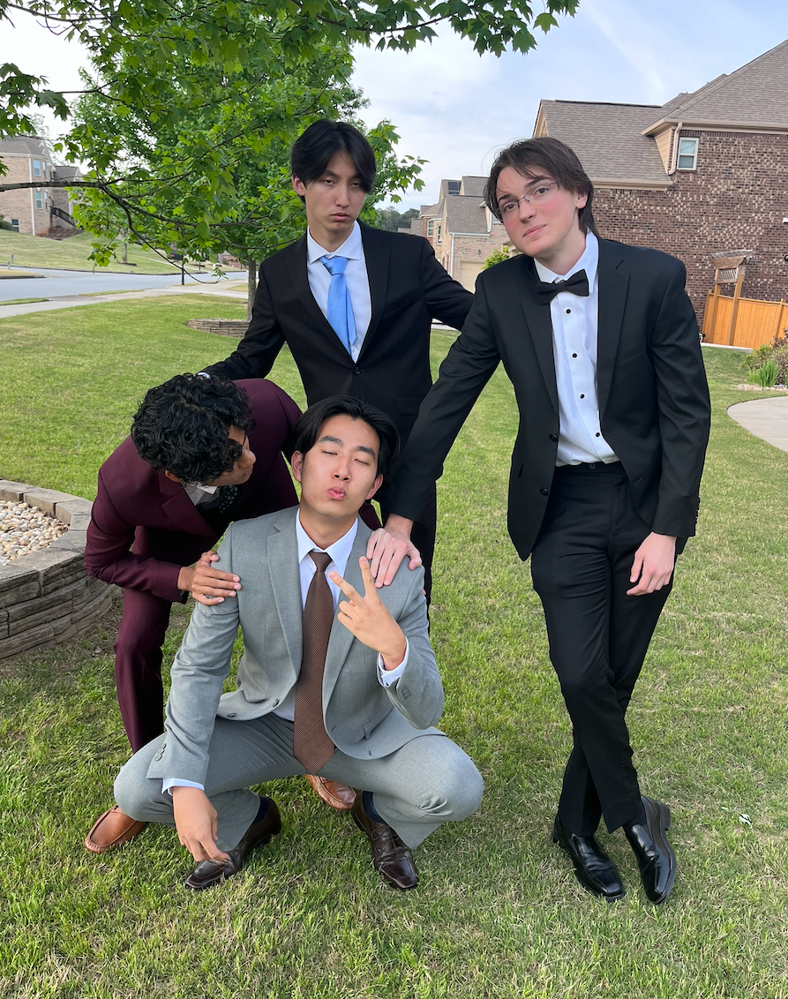
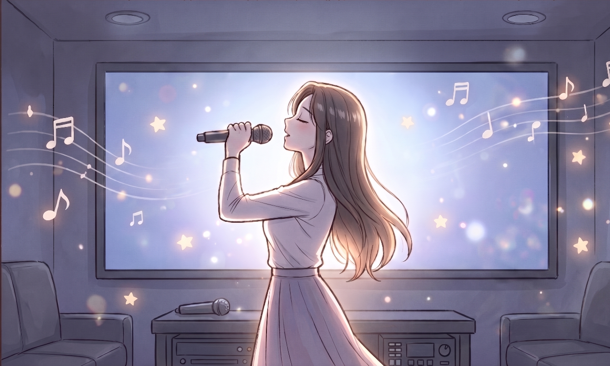
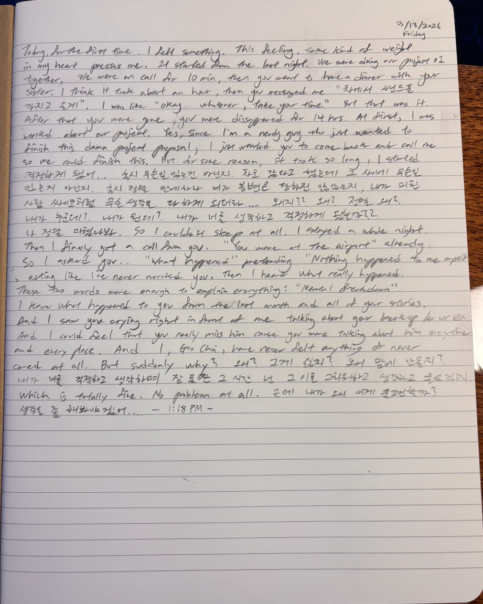

images/ch3-friends.jpg
일단 Cumming에 사는 한국 사람으로서, 그동안 한국인 친구는 단 한 명도 없었고, 그리고 또한 한국인 유학생 친구도 더욱이 없고, 한국인 유학생 자체도 잘 모르고 못 봤고, 한국 여자 사람 친구도 여기와선 사실 처음 생기는 거여서 그냥 좀 신기했어. 나랑 너무나도 다른 위치와 환경의 사람을 만나니까 그냥 좀 신기하고 그 사람이 궁금해졌었어.
그렇게 박은비라는 사람을 처음 만나고 같이 프로젝트를 하기 위해서 그 여자애의 아파트 라운지로 처음 가서 서로 정말 많은 얘기를 했던 것 같아. 서로의 인생 이야기, 어떻게 미국에 오게 됐고 어떻게 살았고, 또 그리고 연애 얘기도… 난 나의 연애로 정말 상처가 깊었던 아이고, 넌 너대로 사연이 있고 또 마침 헤어진 지 얼마 안 됐었어서 그렇게 힘들고 슬퍼하는 널 보면서 정말 과거의 내가 많이 떠올랐었어. 나도 저렇게 많이 너무 힘들고 슬펐는데 이 친구는 지금 얼마나 힘들까. 내가 도와주고 싶어도, 내가 그랬던 것처럼 지금 아무도 필요하지 않을 텐데, 이 친구 정말 어떡할까. 정말 처음에는 그런 감정이었어. 딱하고 유감스럽고 그냥 뭔가 미안한 그런 마음…
그렇게 거의 열띤 4시간? 정도의 얘기를 하고 우린 밥(스시 → 근데 지금 생각해보니까 같이 처음으로 먹은 건데 조금 비싸긴 했음 ㅋㅋㅋㅋㅋ 내가 좀 오바하긴했지)을 먹으러 갔고 그 이후에 노래방을 갔었어.
근데 거기서 너가 노래 부르는 걸 보면서 처음으로 너가 정말 "여자"구나라는 걸 느끼게 됐어. 너가 My Heart Will Go On을 부르는데 그때 처음으로 느꼈어.
"아.. 누군가 노래 부르는 걸 보면서 반할 수 있구나.."
나 살면서 그런 감정 가져본 게 처음이었어. 그때 처음으로 설렜던 것 같아. 그걸 부르는 너가 너무 우아하고 아름답더라. 나도 아무리 남자인지라 예쁘고 귀엽고 섹시하고 뭐 이런 걸 느끼고 좋아할 줄 알았는데, 살면서 여자 보면서 우아하고 아름답다라고 느낀 게 처음이었어.
난 그 장면이 아직도 기억나. 내가 너 긴 머리 좋아했다고 한 게(이제는 단발 더 좋아함. 그니까 오해 ㄴㄴ) 그때 너가 그렇게 앞에 나가서 노래 부를 때 그렇게 서서 노래를 부르는 너의 옆모습 + 고개를 딱 들면서 마이크를 높게 들면서 부르는, 그러면서 노래방 TV의 빛이 너의 뒷배경이 돼서 그 긴 머리 사이사이로 빛이 딱 들어오는 게 진짜 영화의 한 장면처럼, 슬로우모션처럼 느껴졌었어.

images/ch3-noraebang.jpg
그때가 처음이었어. 내가 정말 너한테 반한 게.
그렇게 너에게 반한 감정을 갖고 같이 프로젝트하고 놀면서 하나둘씩 너의 그 설렘 포인트가 쌓이니까 나도 내 스스로 감정 정리가 안 되더라.. 내가 널 진짜 이젠 좋아하는 건지. 내가 널 그저 첫 한국인 친구로서 좋아하는 건지. 여자 사람 친구여서 좋아하는 건지. 아님 너란 사람을 진짜 좋아하는 건지..
밤마다 매일 생각하고 고민하고 심지어 일기에 썼던 것 같아… 내가 내 감정을 모르겠다고. 누군가 그냥 확 나한테 "너 얘 좋아한다고!!!"라고 소리쳤으면 좋겠다고.
그렇게 나한테 심리적으로 변화가 왔던 것 같아.

images/ch3-end.jpg